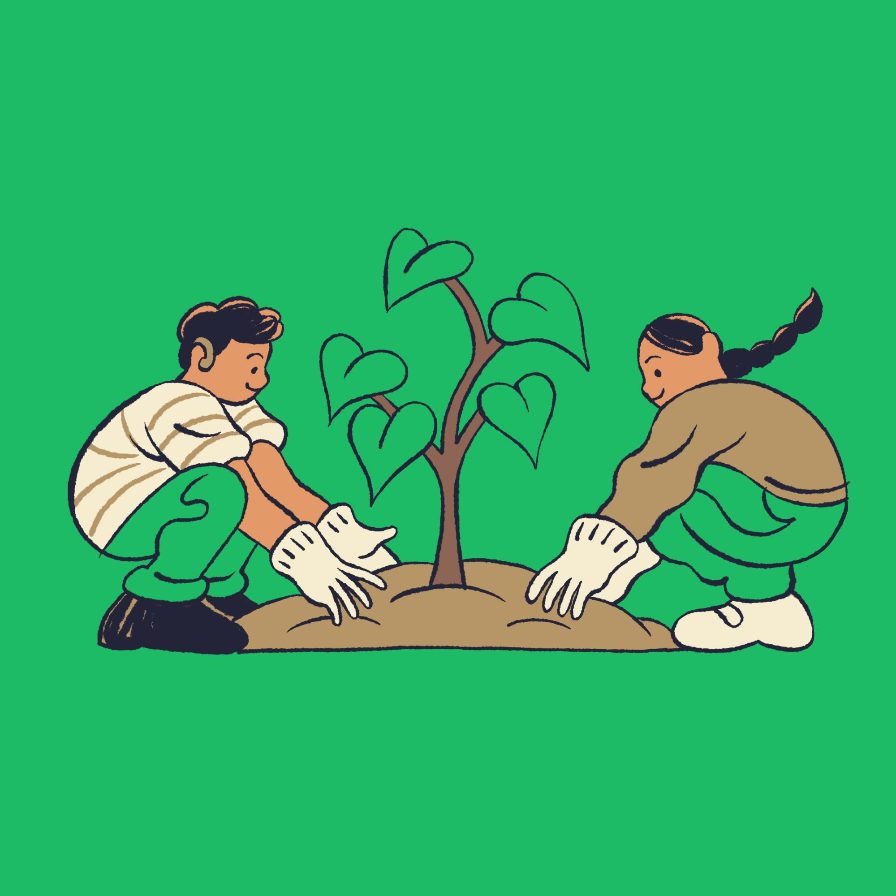
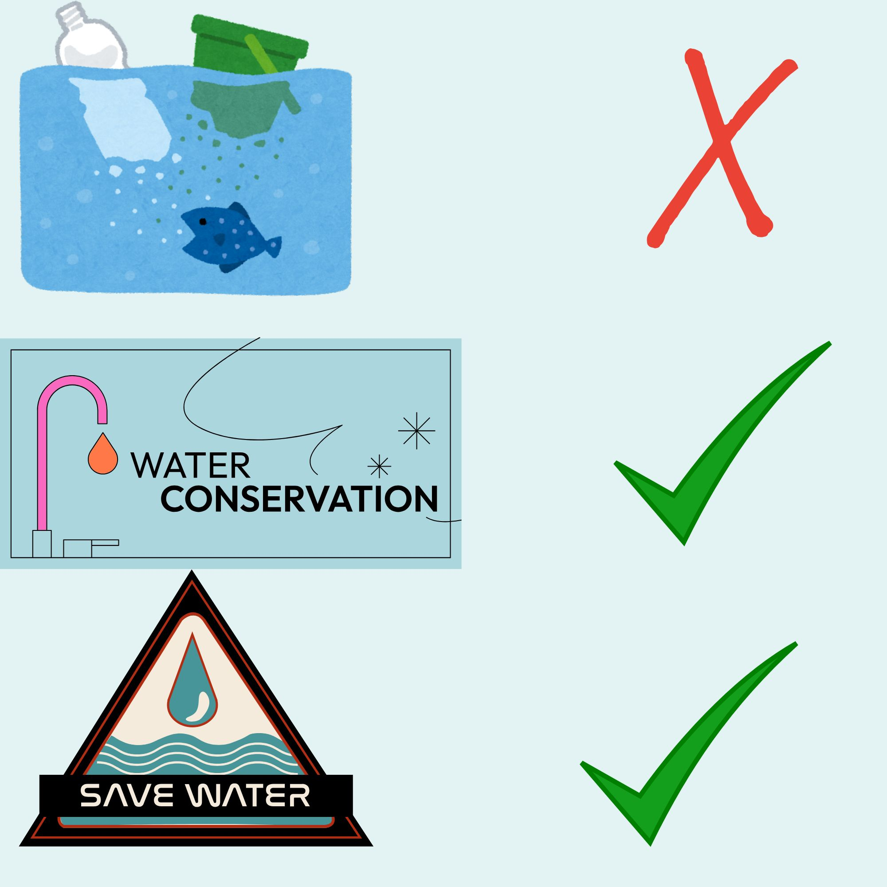
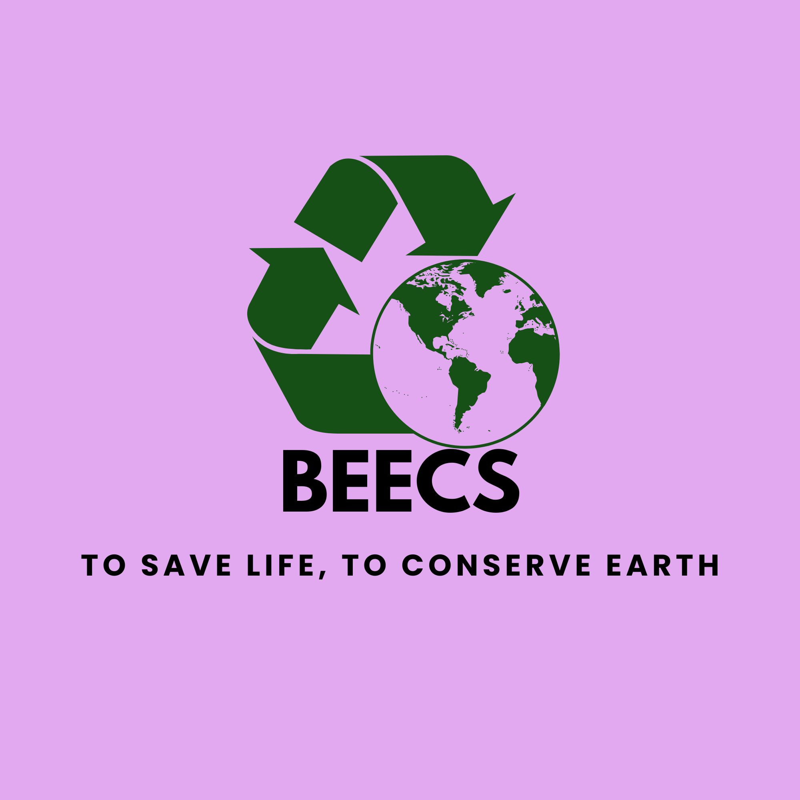
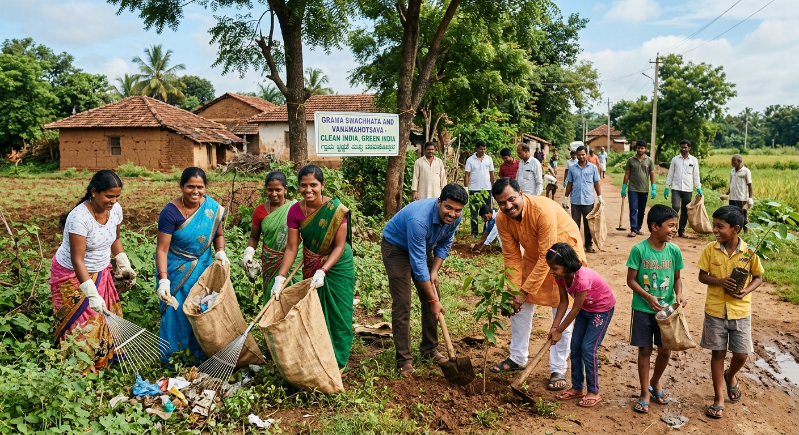

Babhanauli Environment and Ecology Conservation Society
To Save Life, To Conserve Earth
About BEECS Babhanauli Environment and Ecology Conservation Society (BEECS) is a community-based organization dedicated to protecting the environment and promoting sustainable development. The society works on tree plantation, biodiversity conservation, water conservation, waste management, environmental education, and student awareness programs. Through community participation, BEECS aims to create a cleaner, greener, and more environmentally responsible future for Babhanauli and surrounding areas. Working for environmental protection, biodiversity conservation and sustainable development.
Babhanauli Environment and Ecology Conservation Society (BEECS) is a community-based organization dedicated to protecting the environment and promoting sustainable development. The society works on tree plantation, biodiversity conservation, water conservation, waste management, environmental education, and student awareness programs. Through community participation, BEECS aims to create a cleaner, greener, and more environmentally responsible future for Babhanauli and surrounding areas.
A cleaner, greener, and more sustainable future where communities live in harmony with nature, biodiversity is protected, and environmental awareness is widespread.
Join BEECS and become a part of our mission to protect the environment, conserve biodiversity, promote sustainable living, and create awareness among future generations.
Organization: BEECS (Babhanauli Environment and Ecology Conservation Society)
Address: Village Babhanauli, [Siwan], [Bihar]
Email: beecs.in@gmail.com
Phone: +91 7004175692
BEECS is dedicated to conserving the natural environment, promoting ecological awareness, protecting biodiversity, and encouraging sustainable community development in Babhanauli and surrounding areas. Together we can protect biodiversity, conserve water, plant trees and create environmental awareness for future generations.
Organizing plantation drives to increase green cover and improve the local environment.
Promoting rainwater harvesting, pond conservation and responsible water use.
Protecting local flora, fauna, birds and natural habitats.
Encouraging waste segregation, cleanliness drives and environmentally responsible disposal practices.
Conducting environmental education programs, workshops and awareness campaigns for students and youth.
Trees Planted
Students Reached
Awareness Programs
Conservation Initiatives




Tree Plantation and Environmental Awareness Program organized by BEECS.
Babhanauli Environment and Ecology Conservation Society (BEECS) is a community-based organization working to protect nature, conserve biodiversity, promote environmental awareness, and encourage sustainable development in rural areas.
To build a clean, green and environmentally responsible society where people live in harmony with nature, biodiversity is protected, natural resources are conserved, and future generations are empowered through environmental education and sustainable practices.
We believe that environmental protection begins at the community level. Through tree plantation, waste management, biodiversity conservation, water conservation, and environmental awareness among students, BEECS strives to create a sustainable future for present and future generations.